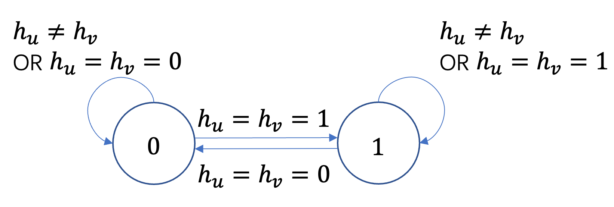

Sznajd
The Sznajd model [1] is a binary opinion dynamics model inspired by the principle "United we stand, divided we fall." Each node holds a binary opinion \(h \in \{0, 1\}\). At each time step:
a node \(u\) is selected uniformly at random from the network;
a neighbor \(v \in N(u)\) of node \(u\) is selected uniformly at random;
if \(u\) and \(v\) share the same opinion (\(h_u = h_v\)), all neighbors of both \(u\) and \(v\) adopt that shared opinion;
if \(u\) and \(v\) disagree (\(h_u \neq h_v\)), no opinion change occurs.
Status
During the simulation, a node holds a binary opinion value:
Status |
Value |
|---|---|
Opinion |
0 or 1 |
Parameters
Name |
Type |
Default |
Required |
Description |
|---|---|---|---|---|
data |
Data |
Yes |
Data of graph. |
|
seeds |
List[int] / None |
Yes |
List of initially activated node indices (opinion = 1) or None. |
|
device |
'cpu'/int (CUDA index) |
'cpu' |
No |
Device to run the model on. |
rand_seed |
Int |
None |
No |
Random seed for reproducibility. |
Implementation
The Sznajd model propagates consensus along agreed-upon edges: when two connected nodes share the same opinion, they jointly persuade all of their neighbors to adopt that opinion. Self-loops are removed to prevent a node from influencing itself. The model uses max aggregation to broadcast the agreed opinion to the neighborhoods of the two concordant nodes.
{kind=link}

A node \(u\) is selected uniformly at random. A neighbor \(v \in N(u)\) is chosen uniformly at random.
If \(u\) and \(v\) agree (\(h_u^{(k-1)} = h_v^{(k-1)}\)), construct an auxiliary signal vector over all nodes:
Propagate \(x\) over the graph using max aggregation. Each node receives the maximum signal among its neighbors:
Nodes adjacent to \(u\) or \(v\) will receive \(h_u^{(k-1)} \in \{0,1\}\), while all other nodes receive \(-1\).
Update opinions for nodes that received a valid signal:
If \(u\) and \(v\) disagree (\(h_u^{(k-1)} \neq h_v^{(k-1)}\)), all opinions remain unchanged: \(h_j^{(k)} = h_j^{(k-1)}\) for every node \(j\).